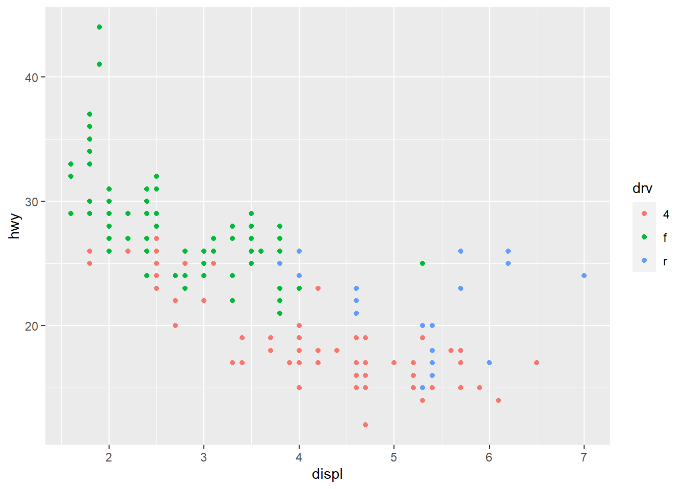
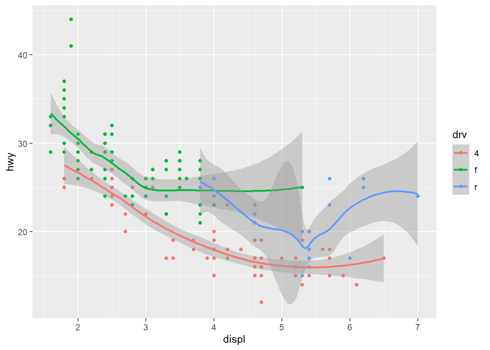

4 可视化与建模
4.1 ggplot2基础语法
4.1.1 ggplot2概述
ggplot是最流行的R可视化包，基于图层化语图形是一层一层的图层叠加而成，先进的绘图理念、优雅的语法代码、美观大方的生成图形，让ggplot2 迅速走红。
ggplot2 绘图语法
选取整洁数据将其映射为几何对象(如点、线等)，几何对象具有美学特征(如坐标轴、颜色等) ，若需要则对数据做统计变换，调整标度，将结果投影到坐标系，再根据喜好选择主题。

图4.1: ggplot2 绘图流程
ggplot 的语法包括10 个部件：
- 数据（data）
- 映射（mapping）
- 几何对象（grom）
- 标度（scale）
- 统计变换（stats）
- 坐标系（coord）
- 位置调整（position adjustments）
- 分面（facet）
- 主题（theme）
- 输出（output）
10 个部件中，前3 个是必须的，其他部件ggplot2 会自动帮你做好它认为’’ 最优’’ 的配置，当然也都可以手动定制。
ggplot(data = <DATA>,
mapping = aes(<MAPPINGS>)) +
<GEOM_FUNCTION>(
mapping = aes(<MAPPINGS>),
stat = <STAT>,
position = <POSITION>) +
<SCALE_FUNCTION> +
<COORDINATE_FUNCTION> +
<FACET_FUNCTION> +
<THEME_FUNCTION>4.1.2 数据、映射、几何对象
数据(data)
数据：用于绘图的数据，需要是整洁的数据框。本节用ggplot2 自带数据集演示。
library(tidyverse)
head(mpg, 4)## # A tibble: 4 x 11
## manufacturer model displ year cyl trans drv cty hwy fl class
## <chr> <chr> <dbl> <int> <int> <chr> <chr> <int> <int> <chr> <chr>
## 1 audi a4 1.8 1999 4 auto(l5) f 18 29 p compa~
## 2 audi a4 1.8 1999 4 manual(m5) f 21 29 p compa~
## 3 audi a4 2 2008 4 manual(m6) f 20 31 p compa~
## 4 audi a4 2 2008 4 auto(av) f 21 30 p compa~用ggplot() 创建一个坐标系统，先只提供数据，此时只是创建了一个空的图形：
ggplot(data = mpg)映射(mapping)
函数aes() 是ggplot2 中的映射函数, 所谓映射就是将数据集中的变量数据映射(关联) 到相应的图形属性，也称为“美学映射”或“美学”。
最常用的映射(美学) 有：
- x：x轴
- y：y轴
- color：颜色
- fill：填充
- size：大小
- shape：形状
- alpha：透明度
最需要的美学是x 和y, 分别映射到变量displ 和hwy, 再将美学color 映射到drv，此时图形就有 了坐标轴和网格线，color 美学在绘制几何对象前还体现不出来：
ggplot(data = mpg,mapping = aes(x = displ,y = hwy,color = drv))注意：映射不是直接为出现在图形中的颜色、外形、线型等设定特定值，而是建立数据中的变量 与可见的图形元素之间的联系，经常将图形的美学color, size 等映射到数据集的分类变量，以实现 不同分组用不同的美学来区分。所以，若要为美学指定特定值，比如color = “red”, 是不能放在映射aes() 中的。
几何对象(Geometric)
每个图形都是采用不同的视觉对象来表达数据，称为是‘‘几何对象’’。 通常用不同类型的“几何对象” 从不同角度来表达数据，如散点图、平滑曲线、线形图、条形图、 箱线图等。 ggplot2 提供了50 余种“几何对象”，均以geom_xxxx() 的方式命名，常用的有：
- geom_point()：散点图
- geom_line()：折线图
- geom_smooth()：光滑（拟合）曲线
- geom_bar()/geom_col()：条形图
- geom_histogram()：直方图
- geom_density()：概率密度图
- geom_boxplot()：箱线图
- geom_abline()：参考直线
要绘制几何对象，就是添加图层即可。
ggplot(data = mpg,mapping = aes(x = displ,y = hwy,color = drv))+
geom_point()
不同的几何对象支持的美学会有些不同，美学映射也可以放在几何对象中，上面代码可改写为：
ggplot(data = mpg,mapping = aes(x = displ,y = hwy))+
geom_point(aes(color= drv))前面提到，为图形美学设置特定值也是可以的，但不能放在映射aes() 中：
ggplot(data = mpg,mapping = aes(x = displ,y = hwy))+
geom_point(color= "blue")
图层是可以依次叠加的，再添加一个几何对象：光滑曲线，然后来区分一下如下两个图形：
ggplot(mpg,aes(displ,hwy,color=drv))+
geom_point()+
geom_smooth()## `geom_smooth()` using method = 'loess' and formula 'y ~ x'
ggplot(mpg,aes(displ,hwy))+
geom_point(aes(color=drv))+
geom_smooth()## `geom_smooth()` using method = 'loess' and formula 'y ~ x'为什么会出现这种不同呢？这就涉及ggplot2“全局”与“局部”的约定：
- ggplot() 中的数据和映射，是全局的，可供所有几何对象共用；
- 而位于“几何对象”中的数据和映射，是局部的，只供该几何对象使用；
- “几何对象”优先使用局部的，局部没有则用全局的。
4.1.3 标度
通常ggplot2 会自动根据输入变量选择最优的坐标刻度方案，若要手动设置或调整，就需要用到标度函数：scale_
标度函数控制几何对象中的标度映射：不只是x, y 轴，还有color, fill, shape, size 产生的图例。它们是数据中的连续或分类变量的可视化表示，这需要关联到标度，所以要用到映射。
常用的标度函数有：
- scale_*_continunos()：*为x或y
- scale_*_discrete()：*为x或y
- scale_x_date()
- scale_x_datetime()
- scale_log10()，scale_sqrt(),scale_*_reverse()：*为x或y
- scalse_gradient()，scale_gradient2()，*为color，fill等
scales 包提供了很多现成的设置刻度标签风格的函数。

图4.2: 图例与坐标轴的组件
4.1.3.1 修改坐标轴刻度及刻度标签
用scale_*_continuous() 修改连续变量坐标轴的刻度和标签：
- 参数breaks 设置各个刻度的位置
- 参数labels 设置各个刻度对应的标签
ggplot(mpg,aes(displ,hwy))+
geom_point()+
scale_y_continuous(breaks = seq(15,40,by=10),
labels = c("一五","二五","三五"))用scale_*_discrete() 修改离散变量坐标轴的标签：
ggplot(mpg,aes(x = drv))+
geom_bar() + #条形图
scale_x_discrete(labels=c("4"="四驱","f"="前驱","r"="后驱"))
用scale_x_date() 设置日期刻度，参数date_breaks 设置刻度间隔，date_labels 设置标签的日期格式；借助scales包中的函数设置特殊格式，比如百分数(percent)、科学计数法(scientific)、美元格式(dollar) 等。
economics## # A tibble: 574 x 6
## date pce pop psavert uempmed unemploy
## <date> <dbl> <dbl> <dbl> <dbl> <dbl>
## 1 1967-07-01 507. 198712 12.6 4.5 2944
## 2 1967-08-01 510. 198911 12.6 4.7 2945
## 3 1967-09-01 516. 199113 11.9 4.6 2958
## 4 1967-10-01 512. 199311 12.9 4.9 3143
## 5 1967-11-01 517. 199498 12.8 4.7 3066
## 6 1967-12-01 525. 199657 11.8 4.8 3018
## 7 1968-01-01 531. 199808 11.7 5.1 2878
## 8 1968-02-01 534. 199920 12.3 4.5 3001
## 9 1968-03-01 544. 200056 11.7 4.1 2877
## 10 1968-04-01 544 200208 12.3 4.6 2709
## # ... with 564 more rowsggplot(tail(economics,45),aes(date,uempmed/100))+
geom_line()+
scale_x_date(date_breaks = "6 months",date_labels = "%b%Y")+
scale_y_continuous(labels = scales::percent)4.1.3.2 修改坐标轴标签、图例名及图例位置
用labs() 函数的参数x, y, 或者函数xlab(), ylab(), 设置x 轴、y 轴标签，前面已使用color美学，则可以在labs() 函数中使用参数color 修改颜色的图例名。
图例位置是在theme 图层通过参数legend.position 设置，可选取值有“none”，“left”，“right”， “bottom”， “top”。
ggplot(mpg,aes(displ,hwy))+
geom_point(aes(color=drv))+
labs(x="引擎大小（L）",y="高速燃油率（mpg）",color="驱动类型") +
#xlab("引擎大小（L）")+ylab("高速燃油率（mpg）")
theme(legend.position = "top")4.1.3.3 设置坐标轴范围
用coord_cartesian() 函数的参数xlim 和ylim, 或者用xlim(), ylim() 函数，设置x 轴和y 轴的范围
ggplot(mpg,aes(displ,hwy))+
geom_point(aes(color=drv))+
coord_cartesian(xlim = c(5,7),ylim = c(10,30))#或+xlim(5,7)+ylim(10,30)4.1.3.4 变换坐标轴
变换数据再绘图，比如对数变换，坐标刻度也会变成变换之后的，这使得图形不好理解。
ggplot2 提供的坐标变换函数scale_x_log10()等是变换坐标系，能够在视觉效果相同的情况下，使用原始数据的坐标刻度：
load("datas/gapminder.rda")
p=ggplot(gapminder,aes(gdpPercap, lifeExp)) +
geom_point()+
geom_smooth()
p+scale_x_continuous(labels = scales::dollar)## `geom_smooth()` using method = 'gam' and formula 'y ~ s(x, bs = "cs")'p+scale_x_log10(labels = scales::dollar)## `geom_smooth()` using method = 'gam' and formula 'y ~ s(x, bs = "cs")'
4.1.3.5 设置图形标题
用labs() 函数的参数title, subtitle, caption设置标题、副标题、脚注标题（默认右下角）：
ggplot(mpg,aes(displ,hwy))+
geom_point(aes(color=drv))+
geom_smooth(se = FALSE)+
labs(title = "燃油效率随引擎大小的变化图",
subtitle = "两座车(跑车) 因重量小而符合预期",
caption = "数据来自fueleconomy.gov")+
#国外习惯图形标题位于顶部左端，如果想改成顶部居中，需要加theme 图层专门设置
theme(plot.title = element_text(hjust = 0.5),
plot.subtitle = element_text(hjust = 0.5))4.1.3.6 设置fill, color 颜色
数据的某个维度信息可以通过颜色来展示，颜色直接影响图形的美感。可以直接使用颜色值，但是更建议使用RColorBrewer（调色板）或colorspace 包。
- 离散变量
- manual: 直接指定分组使用的颜色
- hue: 通过改变色相(hue) 饱和度(chroma) 亮度(luminosity) 来调整颜色
- brewer: 使用ColorBrewer 的颜色
- grey: 使用不同程度的灰色
用scale_*_manual()手动设置颜色，并修改图例及其标签：
ggplot(mpg,aes(displ,hwy,color=drv))+
geom_point()+
scale_color_manual("驱动方式", #修改图例名
values = c("red","blue","green"),
breaks = c("4","f","r"),
labels=c("四驱","前驱","后驱")) 用scale_*_brewer() 调用调色版中的颜色：
用scale_*_brewer() 调用调色版中的颜色：
ggplot(mpg,aes(x=class,fill=class))+
geom_bar()+
scale_fill_brewer(palette = "Dark2")查看所有可用的调色版：RColorBrewer::display.brewer.all()。
- 连续变量
- gradient: 设置二色渐变色
- gradient2: 设置三色渐变色
- distiller: 使用ColorBrewer 的颜色
- identity 使用color变量对应的颜色，对离散型和连续型都有效
用scale_color_gradient() 设置二色渐变色：
ggplot(mpg, aes(displ, hwy, color = hwy)) +
geom_point() +
scale_color_gradient(low="green",high = "red")用scale_*_distiller() 调用调色版中的颜色：
ggplot(mpg, aes(displ, hwy, color = hwy)) +
geom_point() +
scale_color_distiller(palette = "Set1")4.1.3.7 添加文字标注
ggrepel 包提供了geom_label_repel() 和geom_text_repel() 函数，为图形添加文字标注。
首先要准备好标记点的数据，然后增加文字标注的图层，需要提供标记点数据，以及要标注的文字给label 美学，若来自数据变量，则需要用映射。
library(ggrepel)
best_in_class=mpg %>% ## 选取每种车型hwy 值最大的样本
group_by(class) %>%
slice_max(hwy,n=1)
ggplot(mpg,aes(displ,hwy))+
geom_point(aes(color=class))+
geom_label_repel(data = best_in_class,aes(label= model))
若要在图形某坐标位置添加文本注释，则用annotate() 函数，需要提供添加文本的中心坐标位 置，和要添加的文字内容：
ggplot(mpg,aes(displ,hwy))+
geom_point()+
annotate(geom = "text",x = 6,y = 40,
label="引擎越大\n燃油效率越高!",
size=4,color="red")4.1.4 统计变换(Statistics)
4.1.4.1 为什么要做统计变换
ggplot(data = diamonds)+
geom_bar(mapping = aes(x=cut))
我们可以看到，mapping中只有cut映射到了x轴，并没有制定什么变量映射到y轴而图案中y轴的count变量在元素数据中是没有的答案是geom_bar在暗地里做了一个统计变换（stat），新生成了一个叫count的变量。
4.1.4.2 统计变换（stat）与几何对象（geom）的关系
大部分stat和geom之间是可以相互转换的 举个例子
画出每个class（车型）对应计数的柱状图。
ggplot(mpg,aes(x = class))+
geom_bar()+
ggtitle("用geom_bar画图")
ggplot(mpg,aes(x = class))+
stat_count()+
ggtitle("用stat_count画图")- geom_bar()和stat_count()是等价的。即geom_bar()默认的stat=“count”，stat_count()默认的geom=“bar”
此外，我们也可以先手动变换好数据之后，再绘图。
data <- mpg %>% #手动变化数据，求每个class对应的合计
group_by(class) %>%
summarise(
n_class=n())
data## # A tibble: 7 x 2
## class n_class
## <chr> <int>
## 1 2seater 5
## 2 compact 47
## 3 midsize 41
## 4 minivan 11
## 5 pickup 33
## 6 subcompact 35
## 7 suv 62ggplot(data,aes(x = class, y=n_class))+
geom_bar(stat = "identity")+
ggtitle("用geom_bar画图")
ggplot(data,aes(x = class, y=n_class))+
geom_col()+
ggtitle("用geom_col画图")- 在geom_bar()函数中更改stat参数从默认的”count”为”identity”后，和geom_col()函数等价，因为geom_col()函数默认的stat参数取值为”identity”。
例子二：绘制每个class对应出displ的合计。
data <- (mpg %>% # class的displ的求和
group_by(class) %>%
summarise(
n_displ=sum(displ)
))
data## # A tibble: 7 x 2
## class n_displ
## <chr> <dbl>
## 1 2seater 30.8
## 2 compact 109.
## 3 midsize 120.
## 4 minivan 37.3
## 5 pickup 146.
## 6 subcompact 93.1
## 7 suv 276.ggplot(data = data,mapping = aes(x = class,y = n_displ))+
geom_bar(stat = "identity")+
ggtitle("用自己手动变换数据做出来的条形图")
ggplot(mpg,aes(x=class,y=displ)) +
geom_bar(stat="identity")+
ggtitle("用stata='identity'变换做出来的条形图")- geom_bar()的position参数默认使用stack堆叠的方式，将所有柱子堆积成一根柱子,相当于对displ求和。
ggplot(mpg,aes(x=class,y=displ)) +
stat_identity() # 散点图
ggplot(mpg,aes(x=class,y=displ)) +
geom_point() # 等价于上一条

- geom_point和stat_identity互相默认，即geom_point()函数的stata参数的默认取值为”identity”，stat_indentity()函数的geom参数的默认取值为”point”。
4.1.4.3 stat与geom的定义及使用
要理解stat和geom内部的运行机制，我们可以看ggplot2包中的User guides, package vignettes and other documentation.里面的文章 extending-ggplot2和知乎专栏。这篇文章介绍了如何自己创建一个新的geom和新的stat，创建新的函数需要我们遇到具体问题时才要去做的事情，在这里我只想通过理解它的创建过程，来理解原有函数之间的关系。
4.1.4.4 统计变换
构建新的统计量进而绘图，称为‘‘统计变换’’，简称‘‘统计’’。比如，条形图、直方图都是先对数 据分组，再计算分组频数（落在每组的样本点数）绘图；箱线图计算稳健的分布汇总，并用特殊盒子 展示出来；平滑曲线用来根据数据拟合模型，进而绘制模型预测值. . . . . .
ggplot2 强大的一点就是，把统计变换直接融入绘图语法中，而不必先在外面对数据做统计变换， 再回来绘图。
ggplot2 中的提供了30 多种‘‘统计’’，均以stat_xxxx() 的方式命名。可以分为两类：
- 可以在几何对象函数geom_*() 中创建，通常直接使用后者即可
- stat_bin()：geom_bar，geom_freqploy()，geom_histogram()
- stat_bindot()：geom_dotplot()
- stat_boxplot()：geom_box_plot()
- stat_contour()：geom_contour()
- stat_quantile()：geom_quantile()
- stat_smooth()：geom_smmoth()
- stat_sum()：geom_count()
- 不能在几何对象函数geom_*() 中创建：
- stat_ecdf(): 计算经验累积分布图
- stat_function(): 根据x 值的函数计算y 值
- stat_summary(): 在x 唯一值处汇总y 值
- stat_qq(): 执行Q-Q 图计算
- stat_spoke(): 转换极坐标的角度和半径为直角坐标位置
- stat_unique(): 剔除重复行
用stat_summary() 做统计汇总并绘图。通过传递函数做统计计算，首先注意x 和y 美学映射到calss 和hwy; fun = mean是根据x计算y，故对每个车型计算一个平均的hwy；fun.max, fun.min 同样根据x分别计算y的均值加减标准差；统计计算的结果将传递给几何对象参数geom 用于绘图：
ggplot(mpg,aes(x = class,y = hwy))+
geom_violin(trim = FALSE,alpha=0.5,color="green")+
stat_summary(fun=mean,
fun.min = function(x){mean(x)-sd(x)},
fun.max = function(x){mean(x)+sd(x)},
geom = "pointrange",color="red")用stat_smooth(), 与geom_smooth() 相同, 添加光滑曲线：
- method: 指定平滑曲线的统计函数，如lm 线性回归, glm 广义线性回归, loess 多项式回归, gam 广义加法模型(mgcv 包) , rlm 稳健回归(MASS 包) 等
- formula: 指定平滑曲线的方程，如y ~ x, y ~ poly(x, 2), y ~ log(x) ，需要与method 参数搭配使用
- se: 设置是否绘制置信区间
ggplot(mpg,aes(displ,hwy))+
geom_point()+
stat_smooth(method = "lm",
formula = y~splines::bs(x,3),
se = FALSE)4.1.5 坐标系(Coordinante)
ggplot2 默认坐标系是笛卡尔直角坐标系coord_cartesian()，常用的坐标系操作还有：
- coord_flip()：坐标轴翻转，即x 轴与y轴互换，比如绘制水平条形图
- coord_fixed(): 固定ratio = y / x 的比例
- coord_polar()：转化为极坐标系，比如条形图转为极坐标系即为饼图
- coord_trans(): 彻底的坐标变换，不同于scale_x_log10() 等
- coord_map(), coord_quickmap(): 与geom_polygon() 连用，控制地图的坐标投影
- coord_sf(): 与geom_sf() 连用，控制地图的坐标投影
坐标轴翻转，从水平图到竖直图：
ggplot(mpg,aes(class,hwy))+
geom_boxplot()+ #箱线图
coord_flip() # 从竖直变成水平直角坐标下的条形图，转化为极坐标下的风玫瑰图：
ggplot(mpg,aes(class,fill=drv))+
geom_bar()+
coord_polar()4.1.6 位置调整(Position adjustments)
条形图中的条形位置调整：
- position_stack(): 竖直堆叠
- position_fill(): 竖直(百分比) 堆叠，按比例放缩保证总高度为1
- position_dodge(), position_dodge2(): 水平堆叠
ggplot(mpg,aes(class,fill=drv))+
geom_bar(position = position_dodge(preserve = "single"))散点图中的散点位置调整：
- position_nudge(): 将散点移动固定的偏移量
- position_jitter(): 给每个散点增加一点随机噪声(抖散图)
- position_jitterdodge(): 增加一点随机噪声并躲避组内的点，特别用于箱线图+ 散点图
ggplot(mpg,aes(displ,hwy))+
geom_point(position = "jitter") # 避免有散点重叠
有时候需要将多个图形排布在画板中，借助patchwork 包更方便。
library(patchwork)## Warning: 程辑包'patchwork'是用R版本4.1.2 来建造的p1 = ggplot(mpg, aes(displ, hwy)) +
geom_point()
p2 = ggplot(mpg, aes(drv, displ)) +
geom_boxplot()
p3 = ggplot(mpg, aes(drv)) +
geom_bar()
p1|(p2/p3)4.1.7 分面(Facet)
利用分类变量将图形分为若干个“面” （子图），即对数据分组再分别绘图，称为“分面”
- facet_wrap()
封装分面，先生成一维的面板系列，再封装到二维中。
- 分面形式：~ 分类变量, ~ 分类变量1 + 分类变量2
- scales 参数设置是否共用坐标刻度，“fixed”（默认, 共用）, “free”（不共用），也可以用free_x,free_y 单独设置
- 参数nrow 和ncol 可设置子图的放置方式
ggplot(mpg,aes(displ,hwy))+
geom_point()+
facet_wrap(facets = ~drv,scales = "fixed")
ggplot(mpg,aes(displ,hwy))+
geom_point()+
facet_wrap(facets = ~drv+cyl,scales = "fixed")- facet_grid()
网格分面，生成二维的面板网格，面板的行与列通过分面变量定义。
- 分面形式：行分类变量~ 列分类变量
ggplot(mpg,aes(displ,hwy))+
geom_point()+
facet_grid(drv~cyl)
4.1.8 主题(theme)
- theme_bw()
- theme_light()
- theme_classic()
- theme_gray(): 默认
- theme_linedraw()
- theme_dark()
- theme_minimal()
- theme_void()
ggplot(mpg, aes(displ, hwy, color = drv)) +
geom_point() +
theme_bw()更多的主题，还可以用ggthemes 包，其中包含一些顶级期刊专用绘图主题；当然也可以用theme()函数定制自己的主题（略）。
4.1.9 输出(output)
用ggsave() 函数，将当前图形保存为想要格式的图形文件，如png, pdf 等：
ggsave("my_plot.pdf", width = 8, height = 6, dpi = 300) ##保存当前图形为pdf格式最后，再补充一点关于图形中使用中文字体导出到pdf 等图形文件出现乱码问题的解决办法。
出现中文乱码是因为R 环境只载入了“sans (Arial),” “serif (Times New Roman),” “mono (Courier New)” 三种英文字体，没有中文字体可用。
解决办法就是从系统字体中载入中文字体，用showtext 包（依赖sysfonts 包）更简单一些。
- font_paths(): 查看系统字体路径，windows 默认是C:
- font_files(): 查看系统自带的所有字体文件
- font_add(): 从系统字体中载入字体，需提供family 名字，字体路径
载入字体后，再执行一下showtext_auto() (启用/关闭功能), 就可以使用该字体了。
ggpplot2 中各种设置主题、文本相关的函数*_text(), annotate() 等，都提供了family 参数，设定为font_add() 中一致的family 名字即可。
library(showtext)## Warning: 程辑包'showtext'是用R版本4.1.2 来建造的## 载入需要的程辑包：sysfonts## Warning: 程辑包'sysfonts'是用R版本4.1.2 来建造的## 载入需要的程辑包：showtextdb## Warning: 程辑包'showtextdb'是用R版本4.1.2 来建造的font_add("heiti", "simhei.ttf")
font_add("kaiti", "simkai.ttf")
showtext_auto()
ggplot(mpg,aes(displ,hwy,color=drv))+
geom_point()+
theme(axis.title = element_text(family = "heiti"),
plot.title = element_text(family = "kaiti"))+
xlab(" 发动机排量(L)") +
ylab(" 高速里程数(mpg)") +
ggtitle(" 汽车发动机排量与高速里程数") +
annotate("text", 5, 35, family = "kaiti", size = 8,
label = " 设置中文字体", color = "red")4.1.10 export包(将ggplot或latice输出为PPT)
export::graph2ppt(x=p$plot,
file="F:/wlzp/AD_KM/p.pptx", width=5, height=3)4.2 自定义ggplot2函数
4.2.1 为什么要自定义ggplot函数
每次在用ggplot函数绘图时，如果你只需要改变一个参数，每次都要复制粘贴所有绘图代码很麻烦。为了使您的代码更加灵活，您需要通过编写函数来减少重复代码。
4.2.2 单个组件
方法一：重复使用的代码片段存为对象
ggplot图的每个组件都是一个对象。大多数情况下，我们创建组件并立即将其添加到绘图中，但其实并不需要这么做。相反，我们可以将任何组件保存为一个变量（给它一个名字），然后将它添加到多个绘图中:
bestfit <- geom_smooth(
method = "lm",
se=FALSE,
colour=alpha("steelblue",0.5),
size=2
)
ggplot(mpg,aes(cty,hwy))+
geom_point()+
bestfit
ggplot(mpg,aes(displ,hwy))+
geom_point()+
bestfit
这是减少简单复制类型的一种方法(比复制粘贴好多了!)，但要求组件每次都完全相同。如果需要更大的灵活性，可以将这些可重复使用的代码片段放在在一个函数中。
方法二：重复使用的代码片段放在函数
例如，我们可以扩展bestfit对象成一个更普适性的函数，给图中增加一条最佳拟合线。下面的代码创建了一个geom_lm()函数，有三个参数，模型的formula，拟合线条的color和拟合线的粗细size：
geom_lm <- function(formula=y~x,color=alpha("steelblue",0.5),
size=2,...){
geom_smooth(formula = formula,se=FALSE,method = "lm",color=color,
size=size,...)
}
ggplot(mpg, aes(displ, 1 / hwy)) +
geom_point()+
geom_lm()
ggplot(mpg,aes(displ,1/hwy))+
geom_point()+
geom_lm(y ~ poly(x,2),size=1,color="red") #等价于formula = y~x+I(x^2)请注意”…“的用法。 在函数中定义缺省参数”…“允许函数接受任意的附加参数。 在函数内部，你可以使用”…” 将这些参数传递给另一个函数。 本例中，将”…“传递到geom_smooth()中，这样就可以修改我们没有显式覆盖的其他参数。 当编写自己的组件函数时，最好总是使用“…” 这种方式。
4.2.3 多个组件
4.3 散点图
4.3.1 密度散点图
绘制散点图时，若散点数目很多，散点之间相互重叠，则不易观察散点趋势，此时可绘制密度散点图解决。
加载R包并生成相关数据
library(ggplot2)
library(dplyr)
library(viridis) # 使用viridis提供的翠绿色标度：scale_fill_viridis()
library(ggpointdensity) # 绘制密度散点图
library(cowplot) # 图形组合，可以自动对其坐标轴
dat <- bind_rows(
tibble(x = rnorm(7000, sd = 1),
y = rnorm(7000, sd = 10),
group = "foo"),
tibble(x = rnorm(3000, mean = 1, sd = .5),
y = rnorm(3000, mean = 7, sd = 5),
group = "bar"))绘图
# 散点图
p1 <- ggplot(data = dat, mapping = aes(x = x, y = y)) +
geom_point() +
labs(tag = "A") + # 添加子图标记
theme_classic()
# 散点图+密度线（geom_density2d）
p2 <- ggplot(data = dat, mapping = aes(x = x, y = y)) +
geom_point() +
geom_density2d(size = 1) +
labs(tag = "B") +
theme_classic()
# 封箱散点图（geom_bin2d）
p3 <- ggplot(data = dat, mapping = aes(x = x, y = y)) +
geom_bin2d(bins = 60) + # bins控制着图中每个箱子的大小
scale_fill_viridis() +
labs(tag = "C") +
theme_classic()
# 密度散点图（geom_pointdensity）
p4 <- ggplot(data = dat, mapping = aes(x = x, y = y)) +
geom_pointdensity() +
scale_color_viridis() +
labs(tag = "D") +
theme_classic()
# 组合4幅图形
plot_grid(p1, p2, p3, p4, nrow = 2)
4幅图的比较
geom_point为ggplot2自带的绘图函数；A图各位置点的数量观察不清
geom_density2d为ggplot2自带的绘图函数，可以绘制密度等高线（图B）
geom_bin2d为ggplot2自带的绘图函数；先将散点封箱处理，然后绘制出箱子，箱子的颜色取决于箱子内散点的数量（图C）
geom_pointdensity为ggpointdensity包的函数；各散点的颜色取决于改点周围临近点的数量（图D） 图C与图D效果类似，但图C的箱子已不再是真实的散点，而图D为真实的散点；比较图C、图D与原始图A的散点稀疏区域便可发现
4.4 生存分析
前期数据处理
library(tidyverse)
library(survival)
library(survminer)
file1 <- foreign::read.dta(file = "F:/wlzp/AD_KM/file1.dta")
file2 <- foreign::read.dta(file = "F:/wlzp/AD_KM/file2.dta")
data1 <- tibble::tibble(grbm=file1$grbm,
dy90=file1$signal90,
dysj=file1$timetg,
arm=file1$cohort)
data2 <- tibble::tibble(grbm=file2$grbm,
dy90=file2$signal90,
dysj=file2$timetg,
arm=file2$cohort)
data <- bind_rows(data1,data2) %>%
mutate(cohort=case_when(arm==1 ~ "treatment-naive",
arm==2 ~ "previously treated",
arm==3 ~ "totol"
)) %>%
select(-arm)画生存曲线
fit<-survfit(Surv(dysj,dy90 == 1)~cohort,data = data)
p <- ggsurvplot(fit,data = data,
palette = c("#E7B800", "#2E9FDF","#F39902"),
conf.int = TRUE,
risk.table = FALSE,
xlab= "proportion of persistence %",
ylab= "proportion of persistence %",
ggtheme = theme_bw(), # Change ggplot2 theme
legend.title = c(""),
legend= "right",
legend.labs = c("treatment-naive","previously treated","totol"),
censor=FALSE)
export::graph2ppt(x=p$plot,
file="F:/wlzp/AD_KM/p.pptx", width=5, height=3)4.5 Plotly
4.5.1 将ggplot对象转化为plotly对象
iris %>%
ggplot(aes(x=Sepal.Length,y=Sepal.Width,color=Species)) +
geom_point()library(plotly)
ggplotly(iris %>%
ggplot(aes(x=Sepal.Length,y=Sepal.Width,color=Species)) +
geom_point())library(survival)
library(survminer)
fit <- survfit(Surv(time, status) ~ sex, data = lung)
p <- ggsurvplot(
fit, # survfit object with calculated statistics.
data = lung, # data used to fit survival curves.
risk.table = FALSE, # show risk table.
pval = FALSE, # show p-value of log-rank test.
censor=FALSE,
conf.int = TRUE, # show confidence intervals for
# point estimates of survival curves.
xlim = c(0,1000), # present narrower X axis, but not affect
# survival estimates.
xlab = "Time in days", # customize X axis label.
break.time.by = 100, # break X axis in time intervals by 500.
ggtheme = theme_light(), # customize plot and risk table with a theme.
)
ggplotly(p$plot)